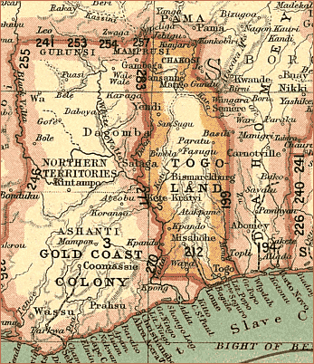

Togo
During the 1840s, the first German missionaries and German merchants arrived in Togoland.
The merchants bought palm products and by 1878, set up trading posts in 1878 at
Anecho (Klein-Popo). In 1884, Gustav Nachtigal signed treaties with
several coastal headmen and in that year the Germans sought protectorate status since they
needed a base for their German West African mailboats. The German protectorate over South Togoland was recognized
by the Conference of Berlin (1884-85). German military expeditions gained control of
North Togoland during the 1890s, and the protectorate’s boundaries were further refined
in treaties with France (1897) and Great Britain (1904). Germany instituted much economic
development, building roads and railroads, constructing a good port at Lomé. The production
of palm products, rubber, cotton, and cacao was encouraged.
However, German levies of direct taxes and forced labor aroused resentment
among the Togolese. In Aug 1914, British and French forces invaded Togoland.
Atakpam was overrun by the Allies on 26 August 1914. Thus came the first Allied
victory of World War I.
The Colony was administered
jointly by Britain and France until divided between them on 10 July 1919.
Lomé was transferred from the British area to the French on 20 September 1920.
On 20 July 1922, the League of Nations divided the region into two mandates,
one French and the other British, and in 1946 the mandates became trust
territories of the United Nations. French Togoland was administered as a
separate unit until 1960 when it became
independent as the Republic of Togo. British Togoland, made up of West Togoland,
was administered as part of the British Gold Coast colony and protectorate and
in 1957 became part of the independent state of Ghana.

|
|